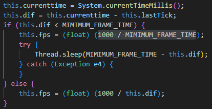
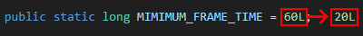
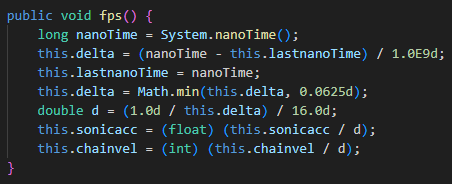

The goal of this project is to make the Android port of Sonic Jump running at a higher frame rate. However, while this sounds simple, this task is actually too demanding to make it possible. This page explains how to make the game running smooth and why it is complicated.
Also, if you have enough experience with Java/Smali programming and would like to give some help for this project, you can contact Furrican via the Contact page.
In the source code, search for "fps" in the Game_Draw file and you will stumble across a condition in the run() method.

In this condition, you can see that the fps equals 1000 divided by MIMIMUM_FRAME_TIME.
If you search for MIMIMUM_FRAME_TIME, you will find out that it equals 60L.
So according to the condition, the frame rate equals 1000 / 60 = 16.66666667.
Now we know that the game runs at 16.66666667fps.
While you might think that the game lags so much, the game is actually designed to run at this frame rate!
Since we now know how the game works, all you have to know now is changing the MIMIMUM_FRAME_TIME value to increase the frame rate.
Now let's make the game running at 50fps.
All you have to do is reduce the initial value of MIMIMUM_FRAME_TIME to 20L.
In this way, the fps value will be equal 1000 / 20 = 50.

Once this value is changed, build the application using Sketchware Pro, and voila! Problem solved, right?
WRONG! As it turns out, doing so makes the game run too fast! It runs 3 times faster than it supposed to be.
The question that is actually the right one to ask is this: How to make the game running smoother and at the right speed?
Well, here's a theory: Since the game is intentionally running at a low frame rate, we have to change all the values regarding speed, physics, gravity, time and animation frames by dividing or multiplying all those values by 3 or 4.
In this way, the game will run 3 or 4 times slower at 16.66666667fps, but it will run at normal speed at 50fps or above!
You might think that this is a good news, but the problem is that this is more complicated.
You see, tracking down every value regarding speed, physics, gravity, time and animation frames will take a lot of time, patience and understandings of the source code.
Additionally, GdGohan has found a way to make the game run smoother on his side.
The way he did is by replacing the System.currentTimeMillis() function by System.nanoTime() and the fps / MIMIMUM_FRAME_TIME condition by a new method named fps().

In this method, GdGohan has opted to a nanoTime system in an attempt to make the game run smoother.
And surprisingly, it works on his device! But it doesn't work on other devices, nor BlueStacks, as the game still runs too fast when this method is applied.
With all that said, if you are an experimented Java programmer and have the patience, you can give some help for this project!